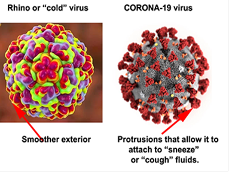

Missing Flu - A Rant
#rant #flu #covidI started to follow the new mRNA technique of fighting “the flu” in 2018. It was novel because it was not trying to anticipate the internal DNA or internal RNA, but the external part of the virus. Rather than a specific antigen to what they guessed would be next year’s virus, it was thought that to attack the external attachment would be more general. Thus it was hoped to be a multiyear approach. I know there were publications on this new approach for at least two years before Covid-19 came along. To add to this new mRNA approach, CRISPER technology is why the current set of vaccines came to fruition rapidly. They were not inventing a new technology, but rather applying sets of tools currently being studied. I was hopeful that there would be some overlap with the common annual “flu”. That may be the case or the following observations might just be human actions. Here the following are some excerpts from some publications. It mentions “influenza testing”. This is something they do all around the world every year to try to guess what will be the upcoming strain of “influenza” the following year.
Erin Graf, the director of clinical microbiology at the Mayo Clinic in Arizona:
I would have thought that if people can get COVID, people can get [the] flu.
These viruses transmit in much the same way, attack similar parts of the body, and even cause similar symptoms. But Graf’s team has done about 7,000 influenza tests since November 2020, and only one has been positive. The 40,000 coronavirus tests, however, have returned about 6,000 positives. The Seattle Flu Study, too, is still diligently screening people for the flu (“influenza”) to ensure that it’s not flying under the radar; of the 6,000 tests the team has run, only two have come back positive. “It’s really quite extraordinary,” says Helen Chu, the head of the study and an immunologist and epidemiologist at the University of Washington.
Similar dynamics played out first in the Southern Hemisphere, where winter stretches from June to August, with countries and cities in South America, Africa, and Australia reporting vanishingly low “influenza” case numbers.
Widespread masking, lockdowns, and other measures that helped squelch the coronavirus in countries such as Australia appear to have wiped out other respiratory viruses too.
Ibukun Akinboyo, a pediatrician and infectious-disease physician at Duke University. “This is the first year we have this many people masking, washing their hands, and being aware of their symptoms.”
Despite their rough overlap in symptoms, flu viruses and the new coronavirus are biologically distinct in ways that might give the newcomer an edge. The coronavirus seems to transmit more readily to others, even from people without symptoms, and has been linked to more super-spreader events. Microscopic anatomical differences might make the coronavirus more likely to cling to airborne globs of spittle, (The following illustration is by me)

or tougher to snuff out as it traverses the space among hosts. (Oddly, rhinoviruses, the main culprits behind the common cold, haven’t been stamped out to the same extent as the flu—a hardiness that could be attributed to their tough outer armor.
Every skipped flu season adds to the pool of people who haven’t yet been infected, including very young children who may have never experienced these viruses at all.
In one scenario, the stark lack of flu transmission this year could end up throttling the circulating strains—possibly even taking one out of commission entirely. “What if we just lose one of the lineages?” he said. “That would be awesome.”